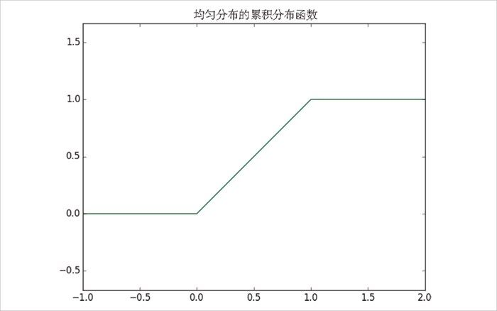

如果积分运算不直观，有一种更简单的理解方式：一个分布的密度函数为 f ， 如果 h 很小，则变量的值落在 x 与 x + h 之间的概率接近 h* f (x )。
如果积分运算不直观，有一种更简单的理解方式：一个分布的密度函数为 f ， 如果 h 很小，则变量的值落在 x 与 x + h 之间的概率接近 h* f (x )。6.5 连续分布
掷硬币对应的是离散分布 （discrete distribution）——对离散的结果赋予正概率。我们常常希望对连续结果的分布进行建模。（对于我们的研究目的来说，这些结果最好都是实数，但实际中并不总是这样的）例如，均匀分布 （uniform distribution）函数对 0 到 1 之间的所有值都赋予相同的权重 （weight）。
因为 0 和 1 之间有无数个数字，因而对每个点而言，赋予的权重几乎是零。因此，我们用带概率密度函数 （probability density function，pdf）的连续分布来表示概率，一个变量位于某个区间的概率等于概率密度函数在这个区间上的积分。
均匀分布的密度函数如下：
def uniform_pdf(x):
return 1 if x >= 0 and x < 1 else 0
如你预期的，一个服从均匀分布的随机变量落在 0.2 和 0.3 之间的概率为 1/10。在 Python 中，random.random() 是按均匀分布生成的伪随机数的函数。
我们还常常对累积分布函数 （cumulative distribution function，cdf）感兴趣，这个函数给出了一个随机变量小于等于某一特定值的概率。生成均匀分布的累积分布函数不难（见图 6-1）：
def uniform_cdf(x):
"returns the probability that a uniform random variable is <= x"
if x < 0: return 0 # 均匀分布的随机变量不会小于0
elif x < 1: return x # e.g. P(X <= 0.4) = 0.4
else: return 1 # 均匀分布的随机变量总是小于1

图 6-1：均匀分布的累积分布函数